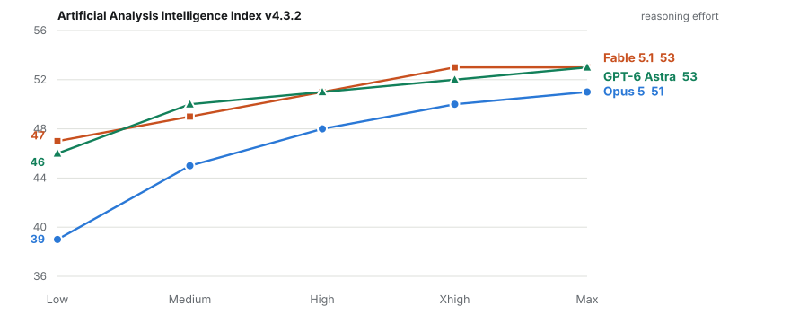
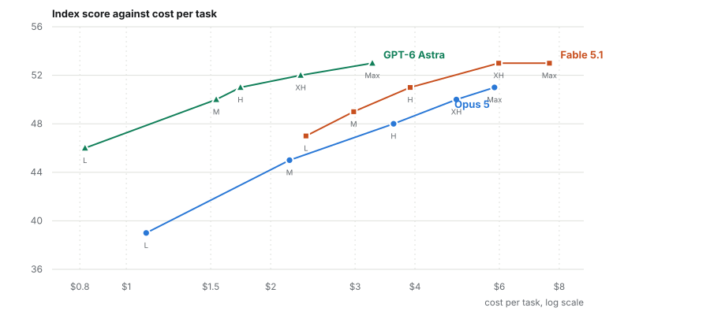
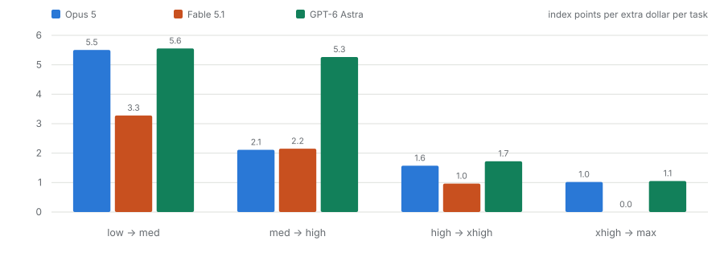
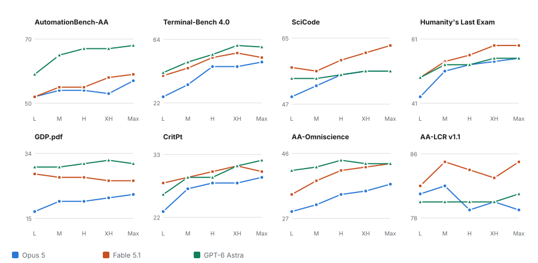
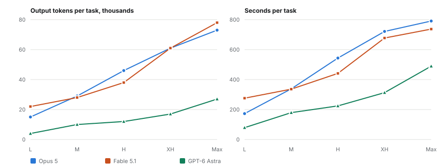
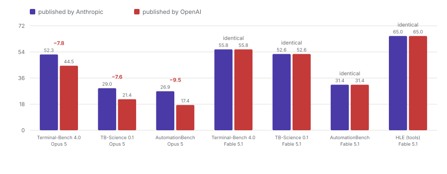

Benchmark analysis / 21 September 2026
The effort dial runs out before the money does
All three frontier models now expose the same five-step effort ladder, and Artificial Analysis has run every rung of it. Two things fall out. The top of the ladder is close to worthless: the last step buys between zero and one index points while costing up to a dollar sixty-five more per task. And at any score the three models can all reach, they do not cost remotely the same, with GPT-6 Astra arriving at Fable 5.1's top score for forty-three percent of the money. I work through both axes here, and the one finding I think is more solid than any of the rankings.
What this piece replaces
An earlier version of this page covered Fable 5.1 against GPT-6 Astra only. Claude Opus 5 has since been swept across the same ladder by the same evaluator, so I have rewritten it as a three-model comparison rather than publish a second, overlapping piece. The Fable 5.1 numbers are unchanged; the conclusions are not, because Opus 5 turns out to have by far the steepest effort curve of the three and that changes what the effort dial looks like.
A note on the index version
Artificial Analysis re-versions its Intelligence Index, and does so without labelling the scale on published articles. Its own Fable 5.1 launch piece reports a max-effort score of 66 against Opus 5's 63. The live leaderboard, under v4.3.2, reports 53 and 51. These are not a disagreement, they are two different scales, and I have used v4.3.2 throughout because it is the one that currently has all three models on it. Anyone still quoting 66 is quoting a retired scale.
Section oneWhat the dial actually controls
Effort is not a quality slider. It is a budget for deliberation, and the three vendors spend it very differently. Across the five settings Opus 5 moves from seven thousand reasoning tokens per task to forty-three thousand, Fable 5.1 from eight to forty-seven thousand, and Astra from under a thousand to seventeen thousand. That last figure is the one to hold on to: at its most expansive setting, Astra is still thinking with roughly a third of the tokens the Anthropic models spend at theirs.
What a reader wants to know is whether that extra thinking is bought back in results. For most of the ladder it is. At the top of it, it is not.
Section twoThe curve, and where it goes flat
The three curves have genuinely different shapes, and the shape matters more than the finishing position.

Opus 5 gains twelve index points from low to max, which is twice what either of the others gains. Read one way that is a strength, since the dial is doing real work. Read the other way it is a weakness, because what it mostly reflects is that Opus 5's low setting is comparatively poor: thirty-nine against forty-six and forty-seven. Astra gains seven points and four of them arrive in the first step. Fable 5.1 gains six across the whole ladder, which is the intended behaviour of a model whose cheapest setting is already strong.
The practical consequence is that the gap between the models depends entirely on where you run them. At low effort Opus 5 is seven to eight points behind. At max it is two. If you were choosing a model by reading a single matched-max comparison, you would be choosing on the narrowest margin the data offers.
Section threeThe frontier, once cost is on the axis
The index-against-effort chart is the one everybody publishes. The one that decides anything is index against cost, because effort levels are not comparable across vendors and dollars are.

Astra's entire curve sits above and to the left of both Anthropic models. There is no score it reaches that either of them reaches more cheaply. Astra at low effort, at eighty-two cents and a score of forty-six, beats Opus 5 at medium effort, at two dollars nineteen and a score of forty-five. Fable 5.1 and Astra both finish on fifty-three, at seven dollars sixty-three and three dollars twenty-six respectively. That is two point three times the money for an identical score. Opus 5 does not reach fifty-three at any setting or any price.
I want to be careful about what this does and does not establish. It is one evaluator's index, run once, at list prices. It is not a claim that Astra is the better model for a given job, and section six is about a benchmark split that cuts the other way. But as a statement about what a point of measured capability costs, it is the least ambiguous thing in this entire dataset.
Section fourThe last step buys nothing
Diminishing returns on deliberation are expected. The rate of the diminishing is what surprised me.

The first step returns between three point three and five point six index points per extra dollar. The last returns between zero and one point one. For Fable 5.1 the last step returns exactly zero: xhigh and max both score fifty-three, and max costs one dollar sixty-five more per task, emits seventeen thousand more output tokens and takes sixty seconds longer. On the eight index components, max beats xhigh on three of them and loses on two.
My reading is that for Fable 5.1, max effort is not a setting to be used by default. It is a setting for the specific tasks where SciCode-like or long-context work is the bottleneck, and the two points it buys there are worth paying for. Used as a global default it is a straightforward waste.
Section fiveEight benchmarks, and a clean split
The aggregate index hides a specialisation that is consistent across every effort level, which makes it much harder to dismiss as noise.

Astra leads both Anthropic models at every effort level on the three tool-use and document-grounded evaluations: AutomationBench-AA by seven to thirteen points, Terminal-Bench 4.0 by two to seven over Fable 5.1 and eight to sixteen over Opus 5, and GDP.pdf by two to six and nine to thirteen respectively. Fable 5.1 leads on the scientific-code and knowledge evaluations, by seven points on SciCode at max and four on Humanity's Last Exam, and it is the only model above eighty-four percent on AA-LCR long-context retrieval.
Opus 5 leads nothing at matched max effort. Its best result is a tie with Astra on SciCode and on Humanity's Last Exam. Its weakness is concentrated almost entirely in the agentic column, which is worth knowing if agentic work is not what you are buying it for.
Section sixMore effort is not reliably better
Ten of the twenty-four model and benchmark pairs in the component set are non-monotone in effort. Some of that is noise at small sample counts. Two of them are not.
Fable 5.1's GDP.pdf score falls monotonically across the whole ladder, twenty-eight percent at low down to twenty-six at max. Opus 5's AA-LCR long-context score peaks at medium, eighty-two percent, and is three points lower at max. A single dip is noise; a monotone decline over four steps is a pattern, and the pattern is that on long-document retrieval, extended deliberation appears to hurt. I would not want to over-read two series, but it is enough that I would not set max effort globally without checking it against the specific task type.
Section sevenWhat effort costs in tokens and time
Cost per task is a derived figure. The underlying quantities are more revealing.

At max effort Fable 5.1 emits seventy-eight thousand output tokens per task and Opus 5 seventy-three thousand, against Astra's twenty-seven thousand. For the same index score, that is roughly a third of the tokens. Latency follows: a max-effort task takes Opus 5 seven hundred and ninety-one seconds and Fable 5.1 seven hundred and thirty-seven, against Astra's four hundred and ninety. At low effort the relative gap is wider still, seventy-nine seconds against one hundred and seventy-three and two hundred and seventy-six.
For anything a person waits on, that is the difference between a pause and a coffee break, and it is the argument for running below max that I find most persuasive. The index points you give up going from max to xhigh are worth one or zero. The seconds you get back are worth sixty.
Section eightThe two labs disagree about Opus 5, and only about Opus 5
This is the finding I did not expect and the one I am most confident is real, because it does not depend on trusting either vendor's number.

On all four Fable 5.1 figures the two labs agree to the decimal: 55.8, 52.6, 31.4, 65.0. On all three Opus 5 figures OpenAI's number is between 7.6 and 9.5 points lower than Anthropic's. OpenAI's own page puts Opus 5 at 44.5 percent on Terminal-Bench 4.0 where Anthropic reports 52.3.
Exact agreement on one model and systematic disagreement on the other rules out most of the innocent explanations. A harness difference, a scaffold difference or sampling variance would perturb both models, not one. The explanation I find most likely is that OpenAI carried Fable 5.1's figures across from Anthropic's published table while re-running Opus 5 itself, possibly at a lower effort setting, though I cannot demonstrate that from the pages themselves. Either way the practical rule is the one I would apply to any of these tables: do not build a comparison on a competitor's reported figure for a third-party model.
Section nineWhat independent evaluators say
Two organisations run these models themselves rather than republishing vendor figures, and they do not fully agree with each other.
Vals AI puts Fable 5.1 first on its aggregate index at 68.83 percent, Opus 5 second at 67.21 and Astra third at 66.61. The whole spread is 2.2 points against stated confidence intervals of plus or minus 1.08 and 1.09, so Fable's lead over Astra is at the edge of significance and Opus 5's position is not distinguishable from either. On Terminal-Bench 4.0 Vals independently reproduces Artificial Analysis's ordering, Astra ahead of Fable 5.1 ahead of Opus 5, at consistently lower absolute values. Two evaluators agreeing on rank while disagreeing on level is the normal and healthy pattern.
ARC Prize is the only other source publishing effort-resolved numbers. On ARC-AGI-2 Astra leads Fable 5.1 at every matched level, by 7.1 points at low narrowing to 3.3 at high and xhigh. Opus 5 was run at high and max only. I would treat ARC-AGI-1 as saturated, since at 96 to 99 percent it is measuring sampling noise, and I would treat ARC-AGI-3 with caution: its two harnesses disagree by thirty-seven points on the same model, and its no-effort setting scores higher than its low setting, which should not happen.
LMArena separates its four listed variants by eighteen Elo points on vote counts ranging from 2,693 to 42,617. That ordering is not statistically meaningful and I would not cite it. Its WebDev board, where the spread is 113 points, is worth more: Astra 1800, Fable 5.1 1758, Opus 5 1687.
Section tenWhat this evidence cannot settle
Most of the comparison a reader actually wants does not exist. Neither Anthropic nor OpenAI publishes a single effort-labelled number. Both ship effort-swept charts with unlabelled axes, which is a decision I find hard to read charitably given how easily the figures could be tabulated. Artificial Analysis is the only source with all three models on all five settings, and for Astra's per-effort data it is the only source at all, with no independent replication anywhere.
There are no effort breakdowns anywhere for OSWorld, CursorBench, FrontierMath, GPQA, Terminal-Bench-Science or SWE-bench. SWE-bench Verified has no published entry for any of the three models; the figures in circulation are vendor-reported and unverifiable. Nobody publishes results indexed by thinking-token budget, so the named ladder is all there is and the reasoning-tokens column is the closest available proxy.
Two of Artificial Analysis's own metrics, AA-Briefcase and GDPval-AA, returned different values on repeated reads of the same comparison pages, so I have left them out of every figure here rather than pick one. And the margins at matched max effort, 53 against 53 against 51, sit inside the range where a second independent evaluator produces a different ordering entirely. The cost and token findings are far more robust than the capability ranking, and if you take one thing from this piece I would rather it were those.
Sources
Primary data. Artificial Analysis three-way comparison, model leaderboard and the per-effort comparison pages for each model; Vals Index v2 and Vals Terminal-Bench 4.0; ARC Prize results for GPT-6 Astra, Fable 5.1 and Opus 5; LMArena. Vendor figures from Anthropic and OpenAI.
What I verified. Every figure in this piece was read off the cited page on 21 September 2026, and the matched-max row of the Artificial Analysis component table was re-read directly rather than taken second hand. Nothing is estimated or interpolated. Where two sources disagree I have shown both rather than averaging them.
What I could not verify. Astra's per-effort figures have no independent replication. The official SWE-bench, Terminal-Bench, OSWorld and LiveBench leaderboards render their tables client-side and returned nothing, so every figure I have for those benchmarks is second hand. AA-Briefcase and GDPval-AA were unstable across repeated reads and are excluded from the figures. Aggregator sites were used only where they name a primary source, and every conflict I found traces to an aggregator disagreeing with a primary site.